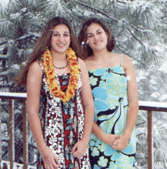

|

|
Kristen Dell Elias was born in Calfornia in 1987 to Bob and Dell Elias, the second of their two children. When she was a young girl the family moved to Lake Tahoe in the Sierra Nevada Mountains of Nevada. In high school Kristen was an überathlete, excelling in several sports but especially softball. She graduated Incline High School in 2005, and then began her collegiate studies at the University of California, San Diego. |